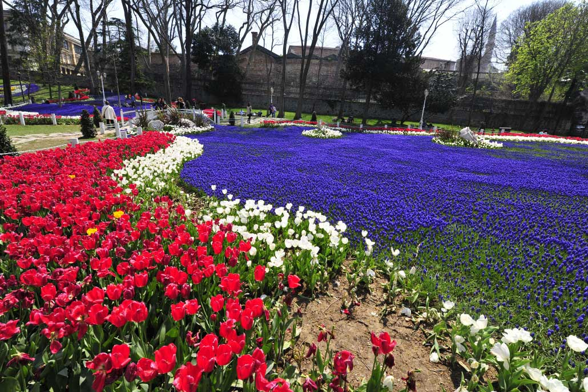

ssssssssssssssssssssssssssssssssssssssssssssssssssssssssssssssssssssssssssssssssssssssssssssssssssssssssssssssssssssssssssssssssssss

İstanbul’da doğa, kültür ve tarihin içiçe olduğu Gülhâne Parkı, haftasonu gezisi olarak değerlendirilebilir. İki tarafı ağaçlarla kaplı bu parkın içerisinde yürüyüş yapmanın yanı sıra, parkta bulunan müze ve kütüphanelerde kültürel bir geziye çıkabilirsiniz.
Gülhane Parkı, Osmanlı İmparatorluğu döneminde Topkapı Sarayı'nın dış bahçesiydi ve içinde bir koru ve gül bahçelerini barındırırdı. Türk tarihinde demokratikleşmenin ilk somut adımı olan Tanzimat Fermanı, 3 Kasım 1839'da Abdülmecit döneminde Hariciye Nazırı Mustafa Reşit Paşa tarafından Gülhane Parkı'nda okunmuştur ve bu nedenle Gülhane Hatt-ı Hümayunu da denir.
ssssssssssssssssssssssssssssssssssssssssssssssssssssssssssssssssssssssssssssssssssssssssssssssssssssssssssssssssssssssssssssssssssss
Mustafa Kemal Atatürk’ün 24 Kasım 1928 yılında kara tahta üzerinde Latin harflerini halka tanıttığı törenin Gülhâne Parkı’nda gerçekleşmesi; parkın önemini Cumhuriyet döneminde de koruduğunun göstergesidir.
Gülhâne Alemdar Caddesi’nde bir kapısı bulunan Gülhâne Parkı’na; Sarayburnu tarafında bulunan kapıdan da giriş yapılabilir. Alemdar Caddesi yönünde iki çeşme bulunan kapıdan sol taraf Gülhâne Parkı’na; sağ tarafta kalan yokuş ise sizi İstanbul Arkeoloji Müzesi, Eski Şark Eserleri Müzesi ve Çinili Köşk’e götürür.
Gülhâne Parkı’nın girişinde sol tarafta sultanların resmigeçitleri izledikleri zarif bir tarzı olan Topkapı Müzesi Alay Köşkü yer alıyor. Aynı zamanda burada Ahmet Hamdi Tanpınar Müze Kütüphanesi de bulunuyor. Köşke doğru çıkan taş rampa ise padişahların köşkün kapısına kadar atla gelmeleri için yapıldı.
Parkın Sarayburnu çıkışına doğru hatıra fotoğrafı çektirebileceğiniz “Gülhane” yazısı bulunuyor. Parktan çıkış yapmadan sağ taraftaki yokuşu takip ettiğinizde ise 15 metre yüksekliğinde Gotlar Sütunu bulunuyor.Müze ve kütüphane ziyaretlerinin ardından parka geri dönüp, park içerisinde bulunan kafede yemeğinizi yiyebilirsiniz. Kafede yemek istemiyorsanız dışarıdan aldığınız yiyeceklerinizi park görevlilerinin izin verdiği alanlarda çimenlerde yiyebilirsiniz.